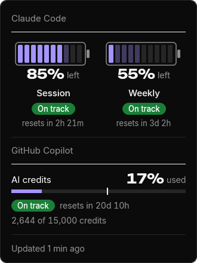
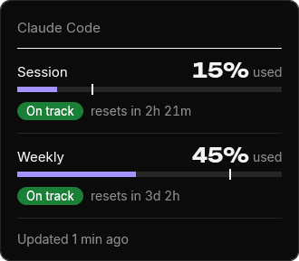
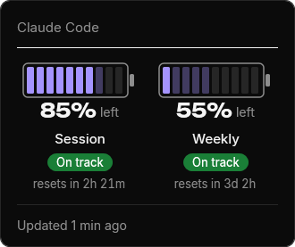
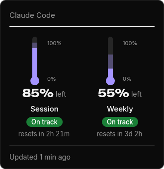
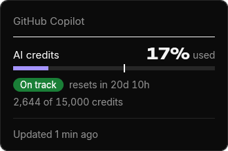
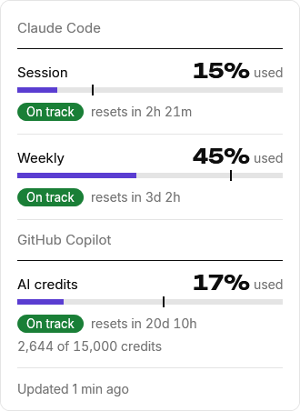

Manual
Everything Sobreiro does, from installing it to taking it off again.
Install
The pill appears beside the clock and fills in within seconds while the Copilot CLI, gh or Claude Code is signed in.
- For Copilot, sign in with the Copilot CLI or gh auth login. Sobreiro doesn't read the sign-in VS Code or Visual Studio keeps. What it reads and sends lists every sign-in it tries.
- Windows may warn about an unknown publisher until the app is signed: More info, then Run anyway; or tick Unblock in the file's Properties before the first run.
- Sobreiro.exe is one file, with the bridge and the fonts inside. It can live anywhere; %LOCALAPPDATA%\Programs\Sobreiro is a good home. Start with Windows records the path where the exe is when you tick it, so tick it again if you move the file.
- Upgrading from 0.7.0's zip: quit the old Sobreiro first (right-click the tray icon, then Quit); while it runs, the new exe only opens its details. Then run the new Sobreiro.exe, choose Reconnect to Claude Code if the menu offers it, and tick Start with Windows again if you use it. Last, delete the old folder. If you saved the new Sobreiro.exe into it (0.7.0 suggested %LOCALAPPDATA%\Programs, so the old folder is ...\Programs\Sobreiro), delete only sobreiro-bridge.exe and Fonts there.
- It needs no .NET.
- On Windows 11 a new tray icon starts in the overflow (^). Drag it onto the taskbar to keep it in view.
- Starting Sobreiro.exe again while it runs opens the details.
Connect to Claude Code
Right-click the icon or the pill and choose Connect to Claude Code. Sobreiro copies the bridge to %LOCALAPPDATA%\Sobreiro\sobreiro-bridge.exe, once you say Yes, and that copy becomes Claude Code's status line command.
- It shows the settings file and your statusLine now and after, and asks first.
- It saves a backup next to the file, named settings.json.sobreiro-<date>-<time>.bak.
- It changes only statusLine.
- Moving Sobreiro.exe later doesn't break the status line, since it runs the copy. When Sobreiro starts, it brings the copy up to date, or puts it back if you deleted it.
- A status line that still runs a bridge elsewhere, such as an unzipped 0.7.0 folder, or the old openheadroom-bridge, shows Reconnect to Claude Code and Disconnect from Claude Code in the menu. Until you reconnect, the old bridge keeps feeding the same usage.json.
- If you already have a status line command, the bridge runs it and passes its output through. Otherwise it prints 5h 8% · 7d 44%.
- When it finishes, it says what it did and where the backup is.
- The status line's numbers arrive after Claude Code's next response.
After a Connect from the app, Disconnect puts your previous statusLine back exactly. The confirmation shows the result first.
- For a bridge set up by hand, it puts back the chained_command from config.json if there is one, and otherwise removes statusLine.
Connect and Disconnect change nothing if settings.json isn't valid JSON or UTF-8, or config.json isn't valid JSON. Both respect CLAUDE_CONFIG_DIR.
If you'd rather edit the file yourself, back up %USERPROFILE%\.claude\settings.json first. If its statusLine already has a command, copy that string into %LOCALAPPDATA%\Sobreiro\config.json so the bridge runs it and shows its output. Never put the bridge itself there.
{ "chained_command": "~/.claude/statusline.sh" }Claude Code on Windows runs the command through Git Bash, so write the path with forward slashes and keep the quotes. The path is the bridge's copy in the data folder. Start (or restart) Sobreiro afterwards, which puts the bridge there.
"statusLine": {
"type": "command",
"command": "\"C:/Users/<you>/AppData/Local/Sobreiro/sobreiro-bridge.exe\""
}- To disconnect, choose Disconnect from Claude Code in the menu, or restore the backed-up statusLine yourself (remove it if you had none).
What it shows
Sobreiro shows each one it finds on this PC. GitHub Copilot shows once there's a reading with a credit budget (Business, Enterprise or Pro), live or from the Copilot CLI's cache. Copilot Free has none, so it isn't shown. Claude Code shows once it's signed in here, has a reading, or is connected. With neither, it shows Claude Code's, with no data yet. A service that isn't shown has no pill block, tray icon or details section.
Both open the same details and the same menu. Claude Code's is two rings, like the Claude app's usage circle: the outer ring fills with the session %, the inner one with the weekly %, clockwise from 12 o'clock. Its tooltip gives the reset times. Copilot's is one ring, in the same colours. Its tooltip reads AI credits 17% · resets Tue 1 Dec 12:00 AM (the time in your format), then how many credits are used and the time of the reading.
- A ring is purple below 70%, amber from 70% and red from 90%.
- With no data only the empty tracks show.
Just left of the tray icons, a block for each service. Claude Code's is 5h 27% above 7d 74%, like the clock, then the same two rings. Copilot's is AI 17% above the reset date, then a small level bar. With both, Claude Code's comes first. Click it for the details, right-click it for the menu.
- The level bar is purple below 70%, amber from 70% and red from 90%, like the rings.
- It finds the tray icons through UI Automation, so it never covers them.
- It hides while a full-screen app runs, while an auto-hidden taskbar is down, or when the app buttons leave no room.
- It follows scaling changes and comes back after Explorer restarts.
- When a service's numbers have stopped, its block shows two words in place of its figures: sign-in expired, no sign-in, sign-in refused, no network, no answer or asked to wait. The details say what to do. This happens after two checks in a row brought nothing and the last reading is over 15 minutes old (Copilot: over a day old).
Left-click a tray icon or the pill. The details panel is black or white, following Windows. Under the Claude Code heading, session and weekly each show the figure, a badge and a line like resets in 42m. Under the GitHub Copilot heading, which comes second when both show, one AI credits row shows the figure, a badge, resets in 20d 10h and 2,644 of 15,000 credits. When Copilot's reading isn't live and fresh, a line says why, for example that it comes from the Copilot CLI's cache.

One of seven, from how much is used and how far the period has gone: the session, the week or Copilot's month.
- On track (green): at this pace you won't run out before the reset.
- Ends 16:40 (amber): at this pace you run out then.
- Likely used up (amber): that time has passed on an old reading.
- Used up (red): the limit is at 100%.
- Not used yet (grey): under 2% used, or the limit has just reset.
- Too early (grey): less than 5% of the period has passed, too soon to tell a pace.
- Resetting (grey): the reset is under 30 seconds away.
Bars, Battery or Thermometer: how the details draw each limit. The tray icons stay rings in every style.









Shows
Style
Sobreiro purple, or the Windows accent. The accent is used only where it reads against the details panel's ground, and the bars stay purple where it doesn't. Amber and red stay as they are. On a taskbar that shows the accent colour itself, the rings are white or black, like the clock.


Every day, or Weekdays only. With Weekdays only, every limit longer than a day (the weekly limit, Copilot's credits, a weekly or monthly spend limit) is judged over Monday to Friday, so two days off don't make you look ahead or behind. After a reset at the weekend the badge reads Too early until Monday morning. The session limit is judged the same either way.
Tray icon only, or Tray icon and taskbar pill, the default.


Starts Sobreiro when you sign in to Windows. Style, colour, Pace and Show are kept in config.json. The menu also has Open data folder, About Sobreiro and Quit.
Once per reset period for each limit, a toast comes from that service's tray icon. Copilot's is titled Copilot AI credits 80% used. Claude Code's reads Session 82% used, over Ends 16:40 · resets in 2h.
Live usage
Claude Code's status line runs only in the terminal, so its numbers go stale while you work in VS Code, the desktop app or claude.ai. Live usage fixes that. It is always on, with no switch.
Also when you open the details on a reading over a minute old, and once as Sobreiro starts.
If the token has expired, Live usage pauses until Claude Code renews its sign-in. If Anthropic refuses it, Live usage doesn't send it again and waits for Claude Code to save a new one.
- The last line of the details says so. It also says when Claude Code isn't signed in, when Anthropic asks it to wait, when it can't reach Anthropic, or when the answer is one it can't read.
It waits 5 minutes, or what Anthropic asks, and doubles that up to 30.
Its readings merge with the status line's, and within a reset period they replace them whatever the %, so the icon, the details and toasts stay current whichever app you use. If Live usage fails, the status line's readings still show.
Copilot's credits come from GitHub on the same schedule, and back off the same way when GitHub says too often. As Sobreiro starts, the Copilot CLI's cached reading fills in at once, and a live reading takes over when GitHub answers.
What it reads and sends
The access token in .credentials.json, in the Claude config folder (%USERPROFILE%\.claude, or CLAUDE_CONFIG_DIR), into memory, for one request at a time. It never stores, logs or renews it.
On every PC, with or without Copilot, Sobreiro looks for one every 5 minutes, and when the details open on a reading over a minute old. It tries, in this order, stopping at the first GitHub accepts: the COPILOT_GITHUB_TOKEN, GH_TOKEN and GITHUB_TOKEN variables, the Copilot CLI's sign-in in Windows Credential Manager, the Copilot language server's sign-in there (the one editor plug-ins leave), then gh auth token --hostname github.com. To find the Copilot CLI's sign-in it may list the Credential Manager entries, but only on a PC where the Copilot CLI has been used, and it keeps only that one; the language server's is asked for by name. Each is read into memory for one request at a time. Sobreiro never stores, logs or renews it. Copilot shows only for a plan with a credit budget.
%LOCALAPPDATA%\copilot\copilot-user-cache.json holds no tokens. Sobreiro reads it for a first reading and while GitHub can't be reached.
GET https://api.anthropic.com/api/oauth/usage with Claude Code's token, for your usage. GET https://api.github.com/copilot_internal/user with any GitHub token it finds, every 5 minutes, and only to that address. Nothing else is sent, no redirects are followed and no cookies are kept. No telemetry and no update checks: nothing else leaves your machine.
The bridge saves only the rate_limits fields and the time, never the rest of what Claude Code passes it.
Anthropic and GitHub can change theirs, and Anthropic's terms don't allow third-party apps to use Claude sign-ins. If you'd rather not, don't install it.
Where the app keeps its data. To use another folder, set SOBREIRO_DATA_DIR to its full path for both the bridge and the tray app; each data folder gets its own tray icon.
- sobreiro-bridge.exe: the status line bridge, copied from Sobreiro.exe. Disconnect leaves it here.
- usage.json: the readings, from the bridge and from Live usage.
- config.json: style, colour and Show, and, after a Connect, your previous status line and its command.
- alerts.json: which toasts have been shown.
- log.txt: the diagnostics log.
A small trace, so a tray that quit or failed to start leaves something behind. It never leaves your machine.
- Each entry has the time, the process id and what happened: the start (with the version), the exit code, a failed start, an unexpected error, or Windows asking to end the session.
- Errors are recorded by their type name and stack trace only. It holds no error messages, usage numbers or file contents.
- One line each time Copilot's poll changes: which sources had a token and what GitHub answered. It holds no tokens, names or numbers.
- The session entry, session-ending, is written when Windows asks to end the session: sign-out, shutdown, restart, or an installer or updater asking apps to close. The tray quits then, even if the sign-out or shutdown is cancelled. reason=Shutdown covers everything except sign-out.
- A start with no later exit means the process was killed or crashed hard, which the log can't record.
- At about 256 KB the file is moved to log.1.txt, replacing the older one.
- If the tray can't start, it shows a box that names the log, or the data folder when the log couldn't be written there either.
The last access token, Claude's or GitHub's, can stay in the app's memory until it is overwritten, since HttpClient takes it as a string property. The app holds no refresh token.
Uninstall
If you connected it, right-click the icon and choose Disconnect from Claude Code, so your status line is back as it was.
In the same menu. It removes the entry that starts Sobreiro.exe when you sign in.
Choose Quit in the menu.
Delete Sobreiro.exe, and %LOCALAPPDATA%\Sobreiro, its data and the bridge copy. Connect's backups, settings.json.sobreiro-<date>-<time>.bak, stay in the Claude config folder beside settings.json; delete them too if you like.
Known limits 6
When Live usage can't fetch (Claude Code not signed in, the sign-in refused or expired, Anthropic unreachable), the numbers update only through the status line, if you connected it, and only the terminal runs it. The VS Code extension never does, and neither does the desktop app (seen 2026-11-09), so usage there and on claude.ai, which counts against the same limits, shows up after your next response in the terminal. Between sessions the app shows the last values and their age, and a limit whose reset time has passed shows as reset.
With several Claude Code sessions open, the higher used % within one reset period stays, so an idle session can't overwrite fresher numbers. A new period, or a new spend cap, replaces the old. Claude Code's own status line shows that session's numbers, so it can read lower than the tray.
Toasts are Windows notifications, so they show only when notifications are on in Settings › System › Notifications.
Claude Code's limits appear only on Pro, Max and Ultra plans, or behind a gateway with a spend limit. Copilot's credits appear only with a monthly credit budget (Business, Enterprise or Pro), so Copilot Free isn't shown.
Per-model weekly limits and plan details aren't shown. The status line doesn't have them, and Live usage leaves them out for now.
It depends on the taskbar's undocumented layout, which Windows updates can change. If it can't find the tray icons it hides, and the tray icon carries on. It shows on the primary monitor's taskbar only, and only with the taskbar at the bottom. It was checked on Windows 11 only.